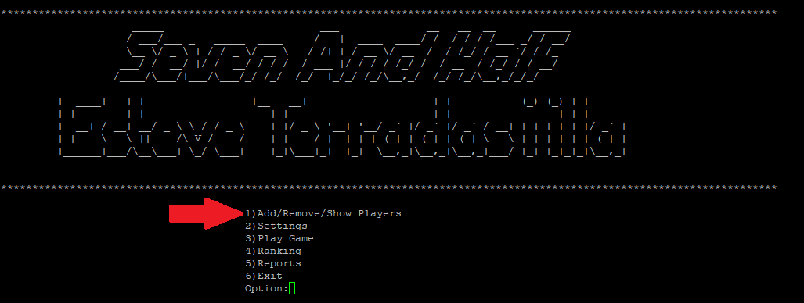
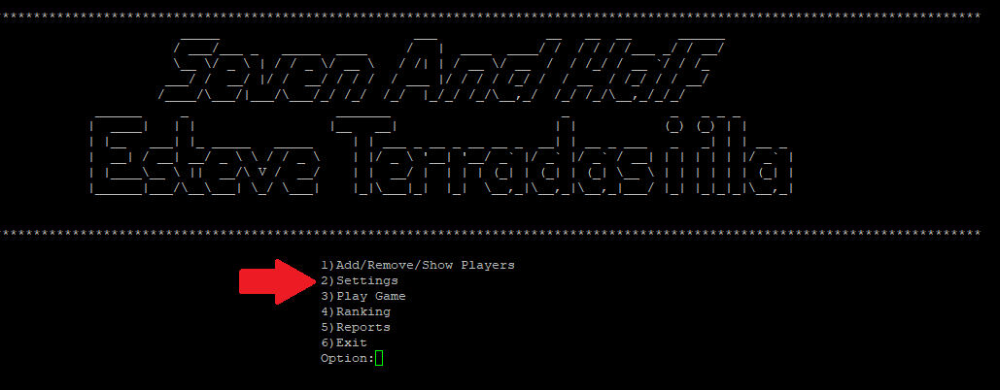
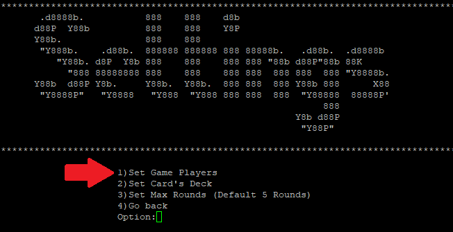
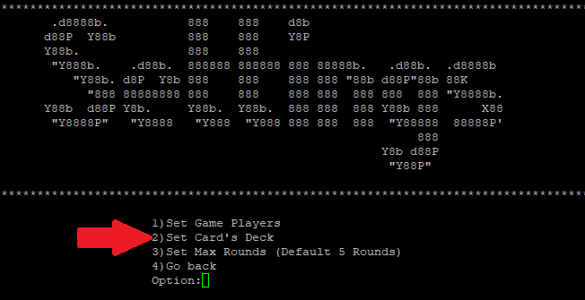
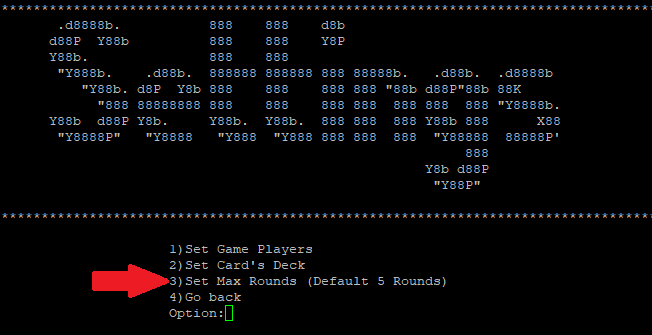
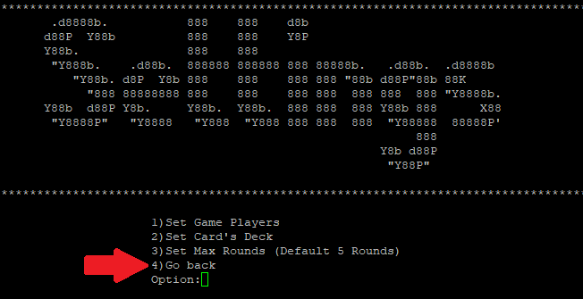
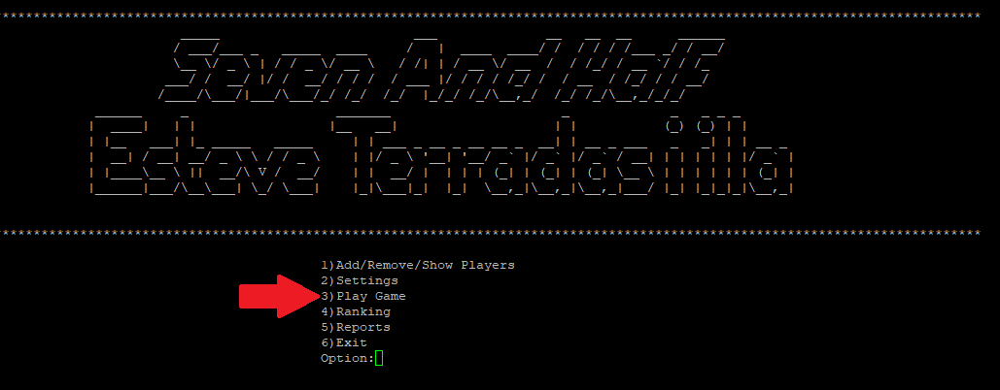
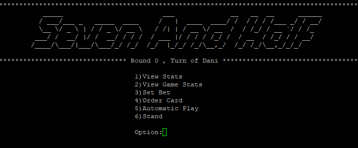

Como usar el programa
- Añadir las personas o bots de la partida

- Agregarlos a la partida


- Escoger el mazo de cartas que quieres usar

- Poner el maximo de rondas

- Empezar a jugar


Dentro de la partida

- Con Set Bet puedes apostar los puntos (En caso de no ser la banca)
- Order card es para pedir cartas
- Stand es para quedarse y no sacar mas cartas
- Automatic play es para que la ia juegue por ti